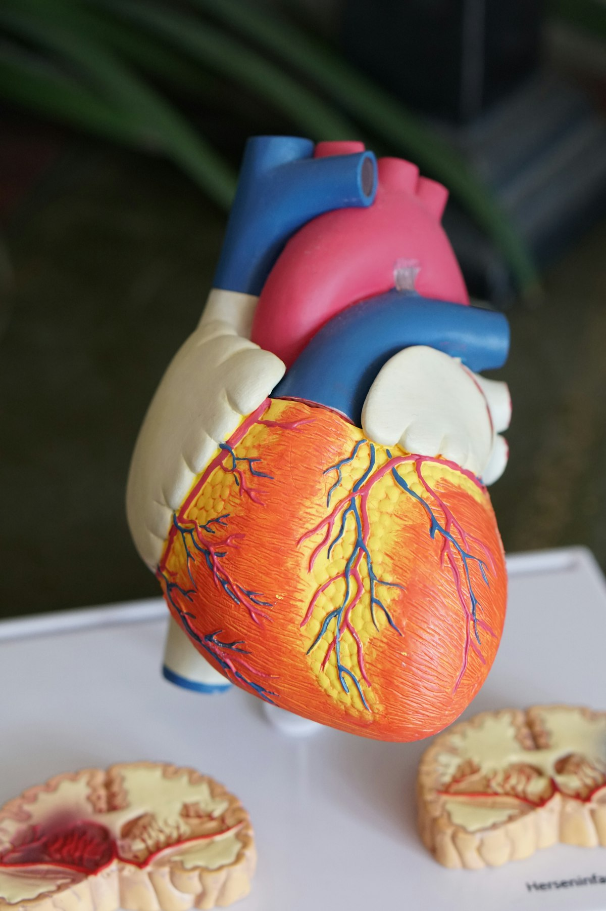
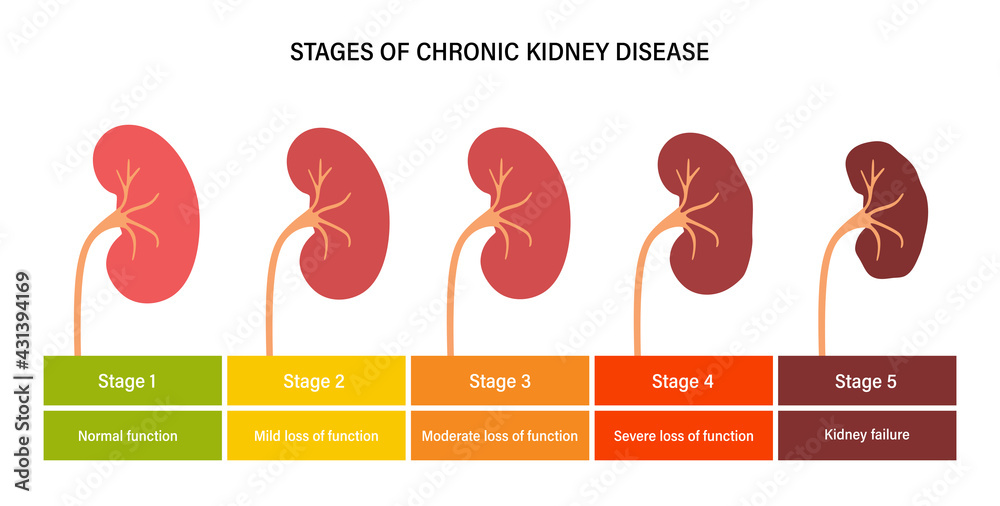

Understanding your kidneys, made simple — trustworthy answers and resources for you and your family.
Frequently Asked Questions
Your kidney questions, answered
Clear answers to the questions we hear most — from diagnosis to dialysis and everything in between.

What is kidney disease?
Kidney disease refers to a variety of conditions related to compromised kidney function — including acute kidney injury and chronic kidney disease. Many conditions can be the underlying cause of lost kidney function, such as high blood pressure, diabetes, lupus, and IgA nephropathy.
What is acute kidney injury?
Acute kidney injury refers to any sudden loss of kidney function.
What are the symptoms of acute kidney injury?
Some patients develop no apparent symptoms, and it's noticed on routine labs. When symptoms do develop, they may include weakness, confusion, vomiting, urinating less, blood in the urine, swelling, or shortness of breath.
What is chronic kidney disease (CKD)?
It's a progressive, slow loss of kidney function — typically caused over time by chronic conditions like diabetes and hypertension. If untreated, it may lead to continued loss of function and even dialysis.
What are the symptoms of chronic kidney disease?
Early on, CKD causes no symptoms. As it advances, patients may develop foot or ankle swelling, uncontrolled high blood pressure, fatigue, or weakened bone health.
What are the stages of chronic kidney disease?
CKD is divided into five stages based on the glomerular filtration rate. Stages 1–3 are considered early stages, while stages 4–5 are advanced.

When might dialysis be needed?
Dialysis is usually initiated at stage 5. In the advanced stages, your nephrologist will begin discussing treatment options and establishing an appropriate timeline for dialysis or transplant.
Can you avoid further loss of kidney function?
Yes. Kidneys can be protected to halt function loss. Visiting a nephrologist and maintaining regular follow-ups helps achieve this, and controlling the underlying cause is an important part of the process.
What happens if the kidneys stop working?
Complete loss of function from CKD progression is considered permanent. Two options are offered: initiating dialysis (home or in-center) or a kidney transplant.
What are the types of dialysis?
There are two main types of outpatient dialysis: hemodialysis and peritoneal dialysis.
What is the difference between In-Center and Home Hemodialysis?
In-center is done at a specialized center, usually three times a week, with each treatment taking 3–5 hours. Home dialysis is done 3–7 times a week on a schedule you control, with treatments taking 3–10 hours.
What is peritoneal dialysis?
Peritoneal dialysis uses a special fluid placed into the belly. The fluid collects waste and excess salt and water from the blood, then drains out of the belly.
Trusted Resources
Learn more from leading kidney organizations
We've gathered reliable, patient-friendly resources to help you go deeper at your own pace.